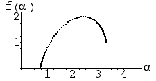
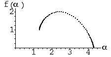

| 4. IFS (d) has f(αmax) = 1. That is, the highest α values form a set of dimension 1. Highest α corresponds to the lowest probabilities, so to achieve this we must have the two lowest probabilities equal to one another, and the other two probabilities different. This is choice (a). |
| IFS (e) has f(αmin) = 1. For this we must have the two highest probabilities equal to one another. This is choice (c). |
| IFS (f) has f(αmax) about 1.6. This is the dimension of the gasket, so three transformations must be applied with the same (low) probability. This is choice (b). |
| (d)
(e)
(f) |
Return to Homework 5 Practice.